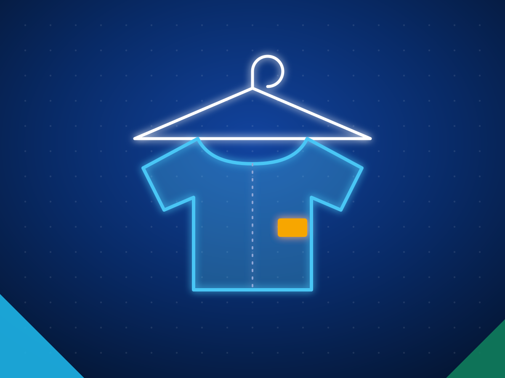

Importing from Sri Lanka to Australia: what sells, duty and biosecurity
Australia bought US$262 million of goods from Sri Lanka in 2025, led by clothing, textile gloves, packet tea, tyres and rubber gloves. There is no free trade agreement, but Sri Lanka is listed as a developing country under the Australian System of Tariff Preferences, so DCS preference rates apply where the tariff sets one. Plant products must clear biosecurity, so check BICON for tea, spices, coco peat and coconut products before you order.
Last reviewed 27 October 2026. General information with sources linked, not legal or customs advice. We do not name buyers.
- US$262M
- Sri Lankan goods exported to Australia in 2025
- DCS
- developing country preference rates apply
- US$18.8M
- packet tea shipped to Australia in 2025
What Australia buys from Sri Lanka
| Product | 2025 |
|---|---|
| Women's outerwear | 33.50 |
| Textile gloves and mittens | 20.90 |
| Tea packets | 18.80 |
| Men's and women's undergarments | 16.90 |
| T-shirts | 16.30 |
| Men's outerwear | 13.90 |
| Pneumatic and retreaded tyres and tubes | 13.00 |
| Industrial and surgical rubber gloves | 12.40 |
| Electrical and electronic products | 10.50 |
| Coconut oil | 9.31 |
| All goods | 262.00 |
Source: Export Development Board, market and country brief on Australia, using Sri Lanka Customs data. Selected lines from the brief's top 20; values in US$ million. Products link to our buyer's guide for that category.
Duty and trade access
- Sri Lanka is listed in Schedule 1, Part 4, Division 1 of Australia's tariff preference lists: developing countries subject to DCS rates of duty. Australian Border Force
- Under section 14 of the Customs Tariff Act, a rate marked DCS in the tariff applies to goods from the developing countries in Part 4. Customs Tariff Act 1995, section 14
- There is no Australia and Sri Lanka free trade agreement. The two countries have a Trade and Investment Framework Arrangement, signed in 2017 and renewed in 2023. DFAT, Sri Lanka country brief
- From 1 July 2024 Australia cut duty to Free on goods under 457 tariff headings and subheadings. Customs Tariff Alteration 2024
Import rules to check in Australia
- Check BICON for every product. Pure black or green tea needs no import permit or mandatory inspection on arrival; some herbal teas need a permit, and spices, seeds and grains may need processing or treatment. Department of Agriculture, Fisheries and Forestry
- Coir peat used as a growing medium, mulch or fertiliser must meet the BICON coir peat conditions. Check the live BICON case for permit and treatment requirements before you ship. Department of Agriculture, Fisheries and Forestry
- Imported food can be referred to the Imported Food Inspection Scheme for inspection and testing, and stays on hold until it passes. Importers are responsible for meeting the Food Standards Code. Department of Agriculture, Fisheries and Forestry
Documents, shipping from Colombo and payment terms are in the full guide: how to import from Sri Lanka. Figures for every market: Sri Lanka export statistics.
Products buyers in Australia source from Sri Lanka

Apparel and textilesActivewear, intimates, swimwear, workwear and fabrics.Ceylon teaBulk, packets, tea bags, green, white and instant tea.Industrial and solid tyresSolid forklift tyres, press on bands, OTR and agri tyres.Coco peat and coirCoco peat blocks, grow bags, coir fibre, twine, husk chips.Coconut food productsDesiccated coconut, milk, cream, powder and VCO.How we help you buy
Tell us the spec
Product, grade, quantity, packing, destination port, the certificates you need and when you need the first shipment.
We shortlist exporters
We match you with Sri Lankan exporters who make that product and already ship to markets like yours, and check them before we introduce them.
You deal direct
Quotes and samples come from the exporters themselves and you choose. We stay on hand for the factory visit, the first order and the first shipment.
Sourcing for Australia?
Send the product, grade, quantity and the certificates Australia requires. We reply within two working days with Sri Lankan exporters who make it and already ship to Australia or markets like it.
Common questions
Is there a free trade agreement between Australia and Sri Lanka?
No. The two countries have a Trade and Investment Framework Arrangement, signed in 2017 and renewed in 2023. Sri Lanka gets developing country (DCS) preference rates under Australia's tariff where a DCS rate is set.
Can I import tea and spices from Sri Lanka into Australia?
Yes, subject to biosecurity. Pure black or green tea needs no import permit or mandatory inspection; some herbal teas need a permit, and spices may need treatment. Check each product in BICON before you order.
Can I import coco peat from Sri Lanka into Australia?
Yes, if it meets the BICON coir peat conditions. Check the live BICON case for permit and treatment requirements before the exporter ships.